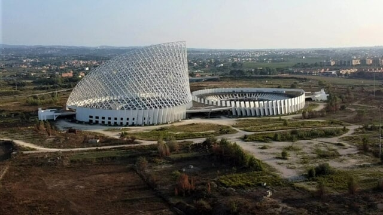

Studiare gli intervalli di monotonia della funzione
\[
f(x) = \dfrac{x^2 -3x}{5x + 1}
\]
Soluzione:
Il dominio della funzione è
\[
D = \left(-\infty\,,\,\,-\dfrac{1}{5}\right) \cup \left(-\dfrac{1}{5}\,,\,\,+\infty\right)
\]
La funzione è
decrescente per \(x \in \left(-1\,,\,\,-\dfrac{1}{5}\right) \cup \left(-\dfrac{1}{5}\,,\,\,\dfrac{3}{5}\right)\)
crescente per \(x \in \left(-\infty\,,\,\,-1\right) \cup \left(\dfrac{3}{5}\,,\,\,+\infty\right) \)
Dall'Alhambra ad Escher
Esistono vari esempi nel tempo di matematica che diventa arte.
La Vela di Calatrava (zona Tor Vergata) è un esempio artistico di superficie rigata.

Un'altra sua opera intitolata "The wave" ha letteralmente la forma di una funzione sinusoidale.
Un caso molto particolare è l'Alhambra, un complesso che si trova a Granada, in Spagna.
Alcuni dei pattern geometrici usati per decorare gli ambienti sono stati riscoperti da Penrose sette secoli più tardi.
Dall'arte alla matematica... per poi tornare all'arte, grazie all'ingegno dell'incisore olandese
Escher.